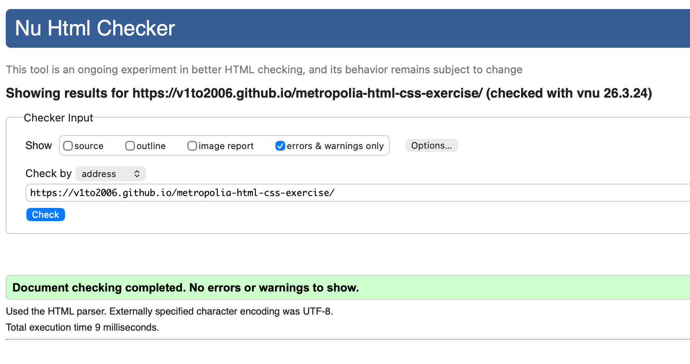
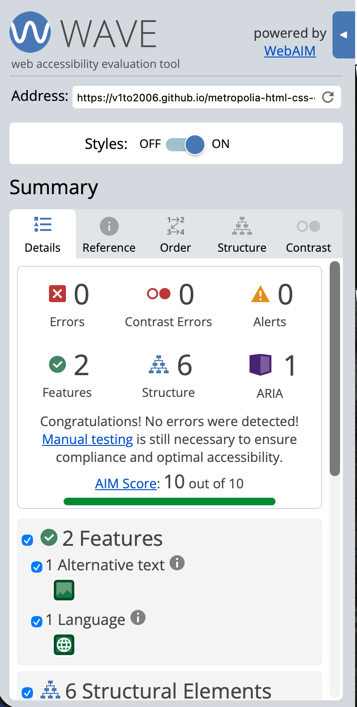

Lighthouse

Fonts are from Google Fonts: Cinzel and Inter
<link rel="preconnect" href="https://fonts.googleapis.com" />
<link rel="preconnect" href="https://fonts.gstatic.com" crossorigin />
<link href="https://fonts.googleapis.com/css2?family=Cinzel:wght@500;700&family=Inter:wght@400;500;700&display=swap" rel="stylesheet" />
body {
font-family: "Inter", Arial, sans-serif;
}
h1, h2, .logo {
font-family: "Cinzel", Georgia, serif;
}

